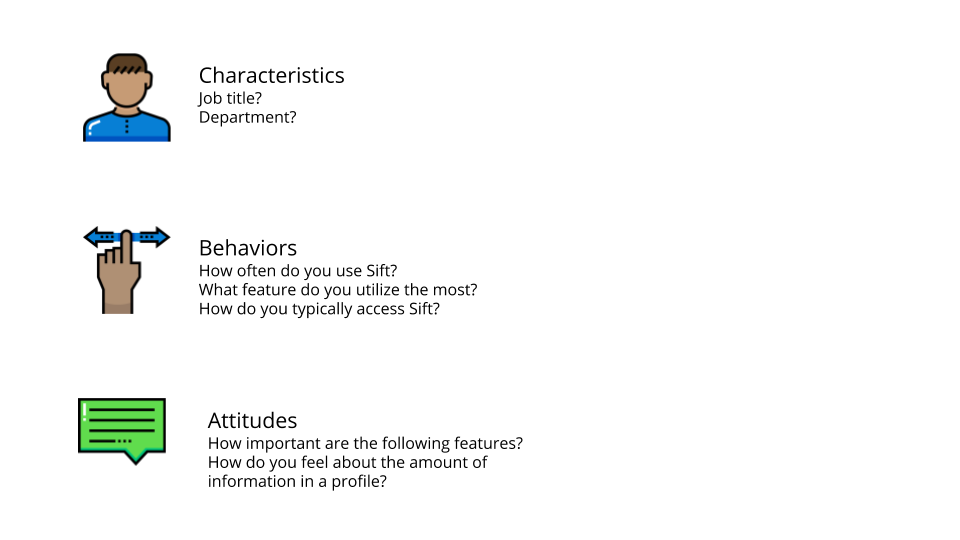

About: Sift is a Detroit-based startup that focuses on human analytics and employee engagement systems for enterprises. Currently, they have 2 products - Connect and Engage. Connect is an employee directory tool that can be used by all employees. It contains a search feature allowing anyone from any department to find any other employee based on search queries which can contain things such as a person's name to skills and interests. Ultimately, Sift believes that a company should know what resources and people they have access to and in an efficient manner.
Scope: Work with the Chief Design Officer to understand Sift's users habits, review usability feedback, and participate in iterative UX design. Additionally, work closely with the engineering team to communicate findings and new design solutions.
Role: Product Design Intern
Responsibilities: Conducted product research; created user flows and information architecture maps; presented findings and recommendations to the CEO and engineers; designed in both low- and hi-fidelity; created surveys, interviews, and usability testing for user research; iterated designs based off feedback from the team; assisted engineers, lead designer, and other design intern with any other design-related concerns
Timeframe: May 2017 - August 2017
Heuristics were conducted of the entire Sift Connect platform where I not only familiarized myself with how the product works and what it consists of, but also discovered key usability issues and bugs.
Comparative analysis and research was done on products both similiar and within a similiar frame as Sift. This was done to form an understanding of the employee engagement market and to see what features were most valued. This was also done for specific design features we hoped to implement. From this, I was able to formulate design recommendations and inspiration.
Sample of Feature Comparison:

I created and administered a survey to gauge use, motivations, and wishes from users for the Sift product. This was done to give insight as to direction for future features and products for the company.
Sample of Survey Questions:
Interview Quotes:
"I lose context [in Sift's current org chart model] when I have to move up and down the tree hierarchy."
"I'm confused a bit by the layout."
"I just keep clicking [the org chart] and what I need will eventually show up."
User flows and information architecture of the site were created in collaboration with the business development team to ensure that we were on the same page and to understand the user's journey.
User Flow Example for Managing Favorited Profiles:
Lo- and hi-fidelity prototypes were created to discuss and iterate design features with the design, business, and engineering team. These ranged from single feature mockups on pen and paper to hi-fidelity wireframes for a portion of the system.
Usability testing was conducted during various portions of the design process from testing the original product and observing the user's painpoints to testing the newly designed features to understand if we were successfully addressing those painpoints.
Wireframes:
Org Chart Prototype:
View the Invision prototype here!
Mobile View Wireframes:
Favorite Interaction Prototype:
Favorite Feature Mobile Prototype:
View the Invision prototype here!
Desktop View Wireframes
Business Tagging Desktop Prototype:
View the Invision prototype here!
Thank you to the talented and friendly team at Sift for a wonderful summer experience!